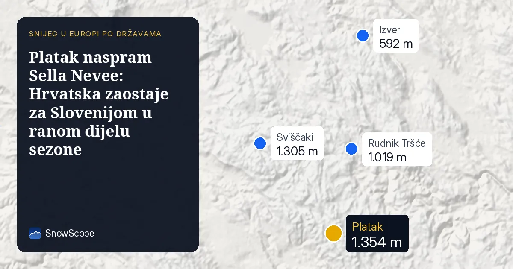
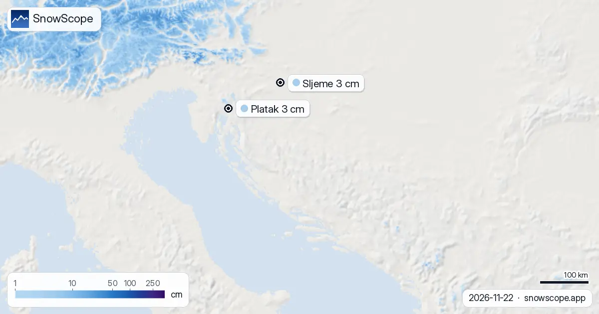

Platak naspram Sella Nevee: Hrvatska zaostaje za Slovenijom u ranom dijelu sezone
Platak je danas na 3 cm, skupljen od minimalnih padavina u protekla tri dana. Preko granice u Sloveniji, Sella Nevea drži 42 cm—jasan jaz koji odražava kako je prvi snijeg sezone padao jače u Julijskim Alpama nego u Dinarskim planinama.
Pogledajte prognozu snijega za Platak u aplikaciji SnowScopeVisina snijega, upozorenja i 3D karta, besplatno.
Hrvatska naspram Slovenije: graničnog jaz
Satelitski podaci iz danas pokazuju razliku jasno. Hrvatska ima snijeg na otprilike 100 km2, ili 1 posto mapiranog područja. Slovenija pokriva 26 posto bijele boje. Uzorak nije slučajan: slovenskogorje je ušlo u odgovarajuću zračnu masu; hrvatsko nije, barem ne još.
Platak i Sljeme, dva hrvatska mjerljiva mjesta, oboje su zabilježili 3 cm dubine do danas. Platak je dobio 4 cm u protekla 72 sata; Sljeme ništa u istom vremenskom prozoru. Nijedno ne gradi bazu. Preko granice, Sella Nevea—slovenski najjednostavniji ski resort—apsorbirala je daleko više, stojišta na 42 cm i hranjena s 7 cm u samo prethodnih tri dana.
Dinara, hrvatski trenutni vođa snijega, drži 8 cm novog snijega u 72 sata. To je stvarni rezultat iz našeg modela, ali raspodijeljen preko planinskog niza, nije koncentriran na resortu. Gorski kotar i Velebit slijede s 7 cm odnosno 4 cm. Slovenija je slična u obliku—planine su uhvatile više—ali viša u apsolutnim brojevima.
| Country | White | Deepest resort | Next 7 days |
|---|---|---|---|
| Croatia | 1 % | Platak | 33 cm |
| Slovenia | 26 % | Sella Nevea | 37 cm |
| Bosnia and Herzegovina | 0 % | OC Bjelašnica ZOI '84 | 28 cm |

Što slijedi: otapanje prije oluje
Niti jedna zemlja neće vidjeti puno snijega u sljedećih tri dana. Hrvatska prognoza pokazuje 3 do 8 cm tijekom sljedećih 72 sata; Slovenija očekuje do 37 cm. Ali hladna perioda toplog vremena je dolazim prvo. Obje granice će vidjeti temperature koje rastu i postojeći snijeg se smanjuje prije pravog događaja.
Okretna točka dolazi 28. listopada. Hrvatske modele pokazuju 14 cm padanju tog dana samoga—najsnježniji pojedinačni dan sljedećeg tjedna. Slovenija će također vidjeti značajnu akumulaciju kasnije tijekom tjedna, ali točka i količina ovisiti će o tačnom putu oluje. Do tada obje zemlje mogu obrisati tablicu s otapanjem sredine tjedna.
Gdje je hrvatski snijeg sakriven
Većina hrvatskog snijega trenutno sjedi iznad 1000 m nadmorske visine. Pojas od 1000 do 1500 m pokazuje 5 posto pokrivanja, uglavnom u planinama koje smo objasnili. Ispod toga zemlja je zelena.
Platak, na 1354 m, je viši od dva resorta i drži više. Njegovih sljedećih tri dana trebalo bi donijeti 8 cm—bolje od Sljemena, koji sjedi na 1029 m i očekuje samo 3 cm. Visina ima važnost sad: niski padini su u utrci sa suncem. Rani sezonski snijeg je tanak posvuda; stijene su blizu ispod površine na nižem tlu.
Trend: iznenadan povratak nakon tjedna otapanja
Prije jednog tjedna, 16. listopada, Hrvatska je imala 880 km2 snježnog pokrivanja. Do 20. listopada, to je gotovo u potpunosti nestalo. Jučer je 100 km2 povučeno natrag—danas je taj broj ostao na 100 km2. Oscilacije su oštre u jeseni.
Platak vodi današnje mjerenja na 3 cm, kao što je bio tijekom prethodnih nekoliko dana. Sljeme je pao na 5 cm do 21. listopada, ali od tada je pao natrag na 3 cm. Niti jedan resort ne pokazuje trend gradnje koji biste željeli vidjeti u kasnom listopadu. Oboje ovise o tome što je stiglo sljedeći tjedan.
Drugi tjedan: kada se uzorak mijenja
Prvih sedam dana na početku ovog posta drži do 33 cm maksimalno u Hrvatskoj. Drugi tjedan—od 30. listopada do 6. prosinca—pokazuje slabiji uzorak: 16 cm maksimalno. Ovo je prozor, ne jamstvo. Ako se greben visokog tlaka gradi rano prosinca, ta prognoza će se sruši. Prognoze mogu se promijeniti.
Što gledati
Gledajte slovensku prognozu blizu: ako se omekšava, hrvatsku će vjerovatno omekšati i. Oluje koje stvaraju snijeg u Julijskim Alpama često jure prema jugu. Gledajte otapanje ovaj tjedan—ako je previše duboko prerezuje, 28. listopada trebati će isporučiti u potpunosti, ili će sezona početi zakašnjeno.
Za sada Hrvatska čeka. Slovenija ima mali predstoji. Do ranog prosinca, taj jaz može se zatvoriti ili može se proširiti. Planine tek počinju slušati zimsko nebo.
Savjeti za skijaše
- Ako planirate skijaš u sljedećih tri dana, odaberite Platak naspram Sljemena: ima 3 cm na većoj nadmorskoj visini (1354 m) i očekuje 8 cm do dana 3, naspram Sljemena 3 cm dubine i 3 cm prognoze. Niži padini će izložiti stijene.
- Gledajte za otapanjem sredine tjedna. Snijeg akumuliran sada može nestati; prava baza će vjerovatno početi nakon 28. listopada ili nakon toga. Izbjegavajte rane sezonske jarcine na tankim snijegom.
- Usporedite tjedan ispred sa Slovenijom: ako prognoza Sella Nevee padne oštre, očekujte istu u Hrvatskoj. Prekogranični uzorci se kreću zajedno.
- Za putovanje izvan staza, provjerite službeni bilten avalanche prije nego što se upustite u Dinaru, Gorski kotar ili Velebit. Rana sezonska nestabilnost je česta na novom snijegu preko vlažne zemlje.
- Do ranog prosinca, ponovno posjećivati prognozu: signala tjedna 2 je slab (16 cm maks). Ako se to drži, sezona će početi spora u obe zemlje.
About these numbers
Resort snow depths are the deepest snow on the resort's upper slopes from the SnowScope snow model (about 1 km, run of 22. studenoga); they are estimates for an area, not a measurement at one point. Station values are measurements on the date shown. Forecasts can change. Always read the official avalanche bulletin before going off-piste.
Cite this report
For research, teaching or the press: the numbers and charts are free to reuse under CC BY 4.0 with this citation.
SnowScope (2026), Platak naspram Sella Nevee: Hrvatska zaostaje za Slovenijom u ranom dijelu sezone, https://snowscope.app/blog/hr/2026/11/croatia-snow-vs-neighbours-22-november-2026.html, accessed 2026-11-22
SnowScope (Atlas Labs). (2026, November 22). Platak naspram Sella Nevee: Hrvatska zaostaje za Slovenijom u ranom dijelu sezone. SnowScope snow reports. https://snowscope.app/blog/hr/2026/11/croatia-snow-vs-neighbours-22-november-2026.html
BibTeX
@misc{snowscope2026croatiasnowvsneighbours2,
author = {{SnowScope (Atlas Labs)}},
title = {Platak naspram Sella Nevee: Hrvatska zaostaje za Slovenijom u ranom dijelu sezone},
year = {2026},
month = nov,
howpublished = {\url{https://snowscope.app/blog/hr/2026/11/croatia-snow-vs-neighbours-22-november-2026.html}},
note = {Published 2026-11-23 00:50 UTC; accessed 2026-11-22}
}· CC BY 4.0 · Methods, data and tools →
Platak: snow and temperature by height, this winter vs last (tools) →
Follow Platak
Besplatno: poruka kada dolazi novi snijeg i prognoza svako jutro.